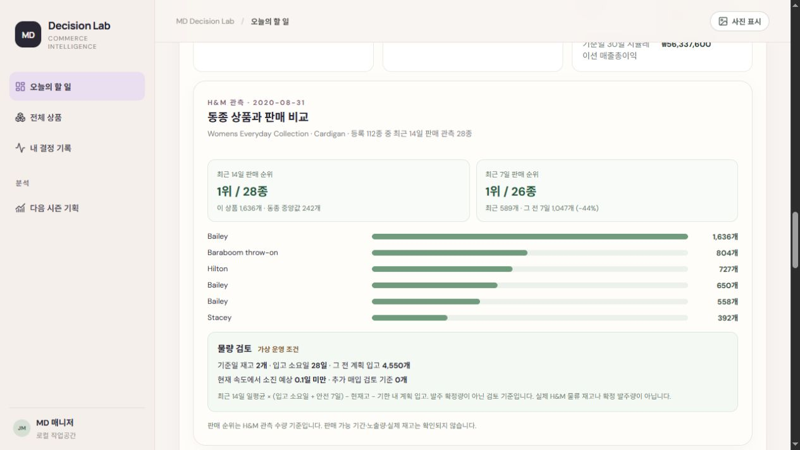
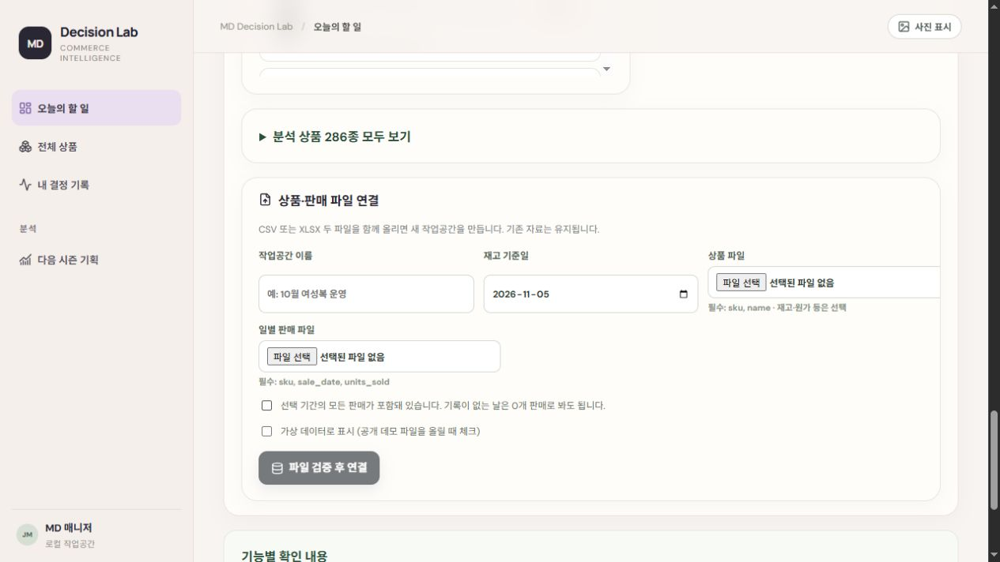
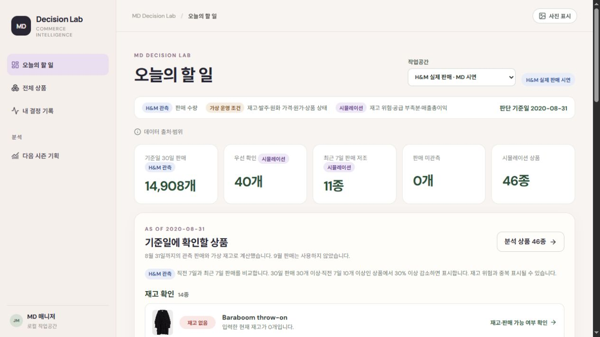
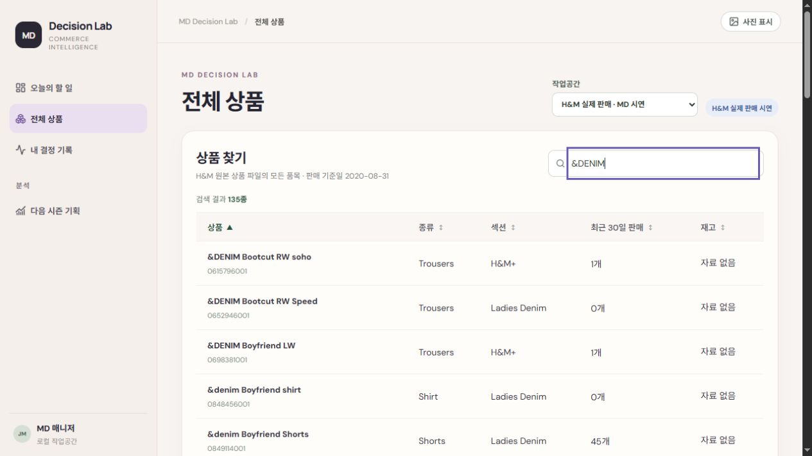
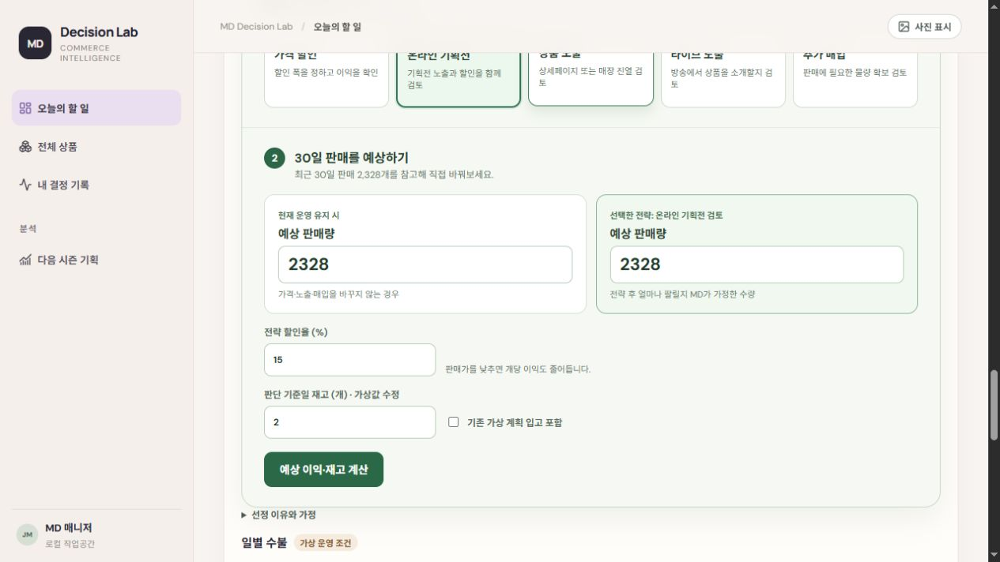
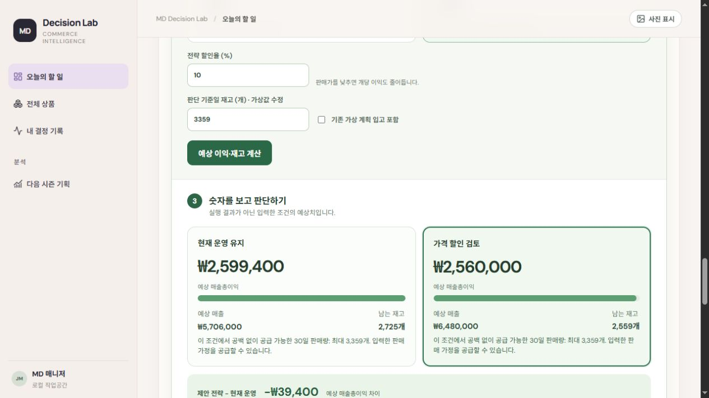

찾기
상품 검색 · 정렬오늘 먼저 확인할 상품을 판매 변화와 재고 위험 기준으로 정리합니다.
복잡한 판매·재고 데이터를 한눈에 읽고, 실행 전 손익과 다음 시즌 준비 물량까지 비교하는 MD 의사결정 도구입니다.
판매 데이터와 재고를 일일이 대조하던 업무를 줄이고, 우선순위 선정부터 전략 비교와 기록까지 하나의 작업 흐름으로 설계했습니다.
오늘 먼저 확인할 상품을 판매 변화와 재고 위험 기준으로 정리합니다.
엑셀에서 따로 계산하던 소진일과 예상 손익을 한 화면에서 비교합니다.
선택 이유와 실행 계획, 이후 결과를 연결해 다음 판단의 근거로 남깁니다.
업무 효율은 기능 구조로 설명하며, 실제 사용 시간 단축률은 별도로 측정하지 않았습니다.
현장 경험에서 문제를 정의한 뒤, 실제 거래 연결과 판단 기능 검증을 반복하며 MD 업무 흐름으로 완성했습니다.
상품·일별 판매·판단 기록 DB와 CSV 업로드, 재고 위험 규칙을 연결해 입력 → 분석 → 저장 흐름을 만들었습니다.
H&M 거래를 상품·일자별로 집계하고 2019·2020 비교와 9월 회고를 추가했습니다. 재고·원가는 별도 운영값으로 분리했습니다.
MD가 전략과 예상 판매량을 직접 입력하고 할인·노출·매입안의 이익을 비교하도록 화면을 판단 순서로 재구성했습니다.
동종 7·14일 순위와 판매 추세, 유사 상품의 두 시즌 흐름을 연결해 누적 인기와 최근 속도를 함께 평가했습니다.
발주·입고 일정의 재고 공백, 실행 계획과 행사 결과 기록을 추가해 당시 판단을 사후 판매와 비교하게 했습니다.
상품 번호(article_id)를 공통 열로 사용해 같은 상품의 거래를 날짜별 판매 기록으로 집계했습니다.
| 구매일 | 상품 번호 | 가격값 | 채널 |
|---|---|---|---|
| 2018-09-20 | 0663713001 | 0.050847 | 2 |
| 2018-09-20 | 0541518023 | 0.030491 | 2 |
| 2018-09-20 | 0505221004 | 0.015237 | 2 |
| 상품 번호 | 상품명 | 종류 |
|---|---|---|
| 0663713001 | Atlanta Push Body Harlow | Underwear body |
| 0541518023 | Rae Push (Melbourne) 2p | Bra |
| 0505221004 | Inca Jumper | Sweater |
대량 거래에서 분석 기간과 상품군을 좁히고, 상품 번호의 앞자리 0을 보존한 채 날짜별 판매량을 계산했습니다.
상품 번호와 구매일을 읽고 식별자의 앞자리 0을 보존
2019·2020년 7–8월 여성복 3개 섹션을 동일 기준으로 선정
판매 변화 유형을 나누고 판단 기능 검증용 운영 자료 연결
판매량 자체보다 다음 조치를 결정하는 데 필요한 비교 기준을 먼저 정의했습니다.
우선 확인 상품
소진 예상일
매출총이익 · 잔여 재고
기획 후보 · 준비 물량
동종 상품 순위와 최근 판매 증감률을 교차 확인해 ‘누적 인기’가 현재 수요로 이어지는지 검증했습니다.

누적 1위라는 타이틀보다 단기 수요 감소를 먼저 반영해 추가 매입 물량을 재조정하거나 보류합니다.
판매·재고를 함께 확인하고, MD가 입력한 조치안을 실행 전에 숫자로 비교하는 하나의 작업 흐름입니다.
판매 증감률·소진 예상일·리드타임으로 위험 상품을 우선 정렬합니다.
우선순위동일 상품군의 순위·중앙값·증감률로 인기 수준과 수요 방향을 봅니다.
비교 근거할인·노출·매입안의 예상 매출, 매출총이익, 잔여 재고를 계산합니다.
실행 전 검증정립된 분석 기준을 자사 판매·상품 파일에도 적용할 수 있도록 입력 구조를 분리했습니다.

CSV 또는 XLSX를 연결해 동일한 분석 흐름을 시작합니다.
최근 수요와 재고, 입고 일정을 함께 비교합니다.
판단 당시 수치와 실행 결과를 다음 시즌 기준으로 남깁니다.
상품 탐색에서 다음 시즌 준비까지 끊기지 않는 다섯 단계로 구성했습니다.
오늘 먼저 볼 상품 확인
소진일과 입고일 계산
이익과 재고 비교
이후 결과 확인
다음 준비 물량 기록
판매 변화와 재고 위험을 자동 계산해 목록을 훑기 전에 확인해야 할 상품부터 보여줍니다.

전체 상품을 순서대로 확인하지 않고 위험 신호가 있는 상품부터 검토합니다.
상품명·번호·종류·섹션 검색과 판매량·재고 정렬로 검토 범위를 빠르게 좁힙니다.

같은 이름의 상품도 식별자와 카테고리로 구분합니다.
판매량과 재고의 오름차순·내림차순으로 대상을 좁힙니다.
많은 상품 속에서 조사할 대상을 찾은 뒤 상세 판단 화면으로 바로 연결합니다.
판매 속도만 보고 발주하지 않고, 예정 입고가 도착할 때까지 현재 재고가 버틸 수 있는지 확인합니다.
30일 총 공급량이 충분해 보여도 입고 전 판매가 멈추는 날짜를 따로 계산해 물량 확보 또는 판매 조정을 검토합니다.
가격 할인·온라인 기획전·상품 노출·라이브·추가 매입 중 조치를 고르고, 전략 적용 후 판매량을 가정합니다.

재고 위험과 판매 추세, 재발주 가능 여부를 참고해 할인·기획전·노출·매입안을 고릅니다.
7·14·30일 판매, 동종 순위, 가용 재고와 입고 일정을 근거로 가정을 입력합니다.
프로그램이 답을 대신 정하지 않고, MD가 세운 가정을 계산 가능한 조건으로 바꿉니다.
재고 과다 상품에 10% 할인, 예상 판매량을 634개에서 800개로 바꿔 현재 운영안과 비교했습니다.

166개를 더 팔아도 할인 폭 때문에 이익이 줄 수 있음을 실행 전에 확인합니다.
결정 이후 실행 계획과 입고·행사 결과를 연결하고, 예상과 실제 차이를 다음 판단의 근거로 바꿉니다.
선택한 전략과 이유를 당시 숫자와 고정해 나중에도 같은 기준으로 확인합니다.
예정일과 실제 입고, 행사 기간과 결과, 진행 상태 변경을 이어 기록합니다.
판매량·재고·매출총이익 차이를 비교해 어떤 가정이 맞고 틀렸는지 회고합니다.
한 상품의 누적 판매가 아니라 상품군 2–5종의 지난 시즌과 올해 흐름을 나란히 보고 기획 후보와 준비 물량을 기록합니다.
주차별 판매 속도와 피크 시점, 시즌 후반 둔화를 한 화면에서 비교합니다.
주차별 판매량과 피크 시점, 시즌 후반 둔화 구간을 확인합니다.
전년 기준선과 현재 수요 방향의 변화 폭을 봅니다.
후보 상품과 예상 준비 물량을 근거 수치와 함께 저장합니다.
화면 입력값을 그대로 믿지 않고 매출총이익, 날짜별 재고 공백, 동종 순위와 발주 검토량을 서버에서 다시 계산합니다.
price = round(unit_price *
(1 - discount_pct / 100), 2)
profit = expected_units *
(price - unit_cost) if feasible else Noneif expected_units * day > supply * 30:
first_gap = first_gap or date
# 날짜별 공급 가능성 확인rank = 1 + sum(
other > units_14d for other in peer_units)
review_units = max(0,
ceil(avg_14d * (lead_days + 7))
- stock - inbound)재고나 비교 근거가 부족하면 수치나 권고안을 임의로 만들지 않도록 예외 조건을 분리했습니다.
판매·재고 확인을 넘어 실행 전 손익 비교, 실행 후 회고, 다음 시즌 기획까지 이어지는 업무 도구를 직접 설계하고 검증했습니다.
흩어진 판매·재고·입고 정보를 우선순위, 소진 예상일, 매출총이익 지표로 바꿨습니다.
3,100만 건의 거래를 상품·일자별로 집계해 동종 순위, 판매 변화, 시즌 흐름을 분석했습니다.
기능과 계산 규칙을 직접 설계하고 AI로 코드를 구현한 뒤 잘못된 권고와 데이터 혼입을 테스트했습니다.
상품 선별, 전략 비교, 판단 기록, 회고, 다음 시즌 준비를 하나의 사용자 여정으로 연결했습니다.
현장의 문제를 데이터로 정의하고, 판단 기준과 UX를 설계하며, AI와 함께 실제로 작동하는 제품을 만들고 검증할 수 있게 되었습니다.